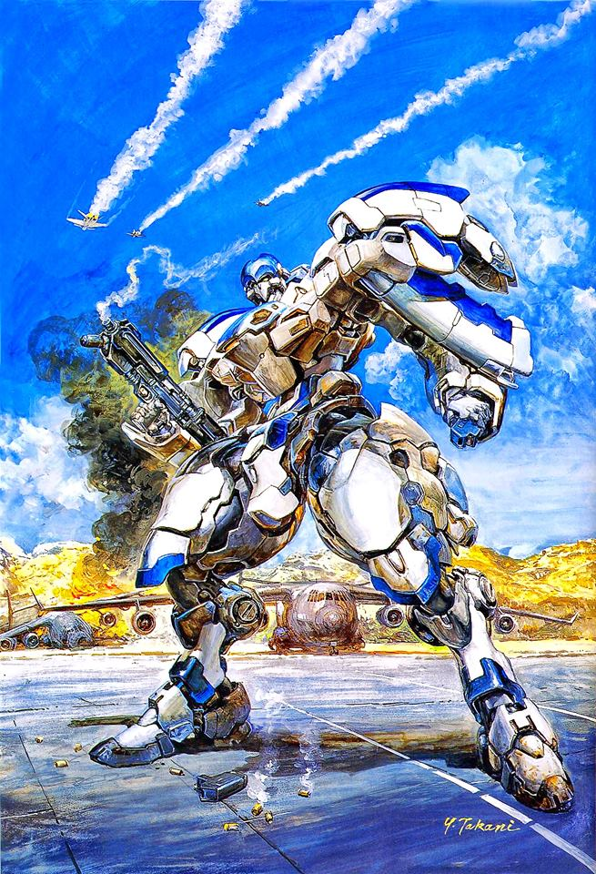
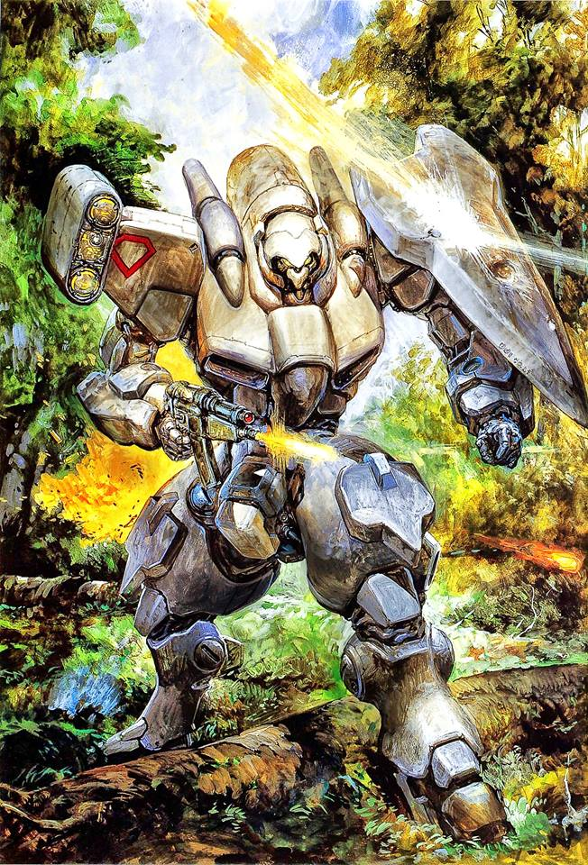
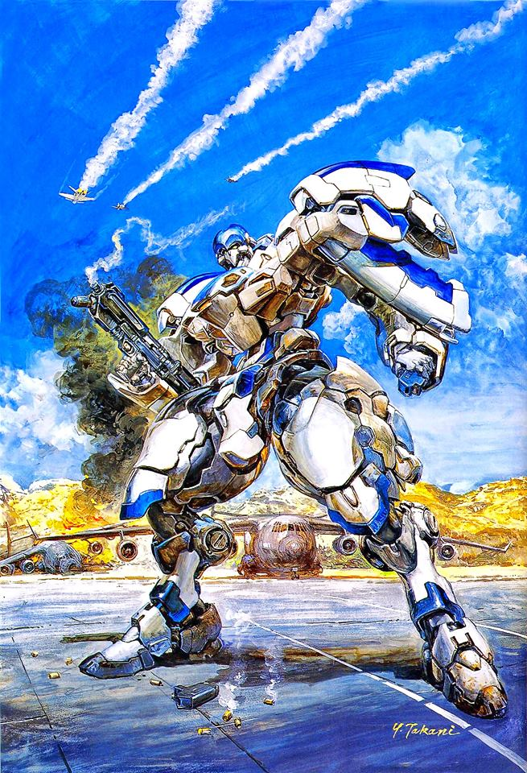
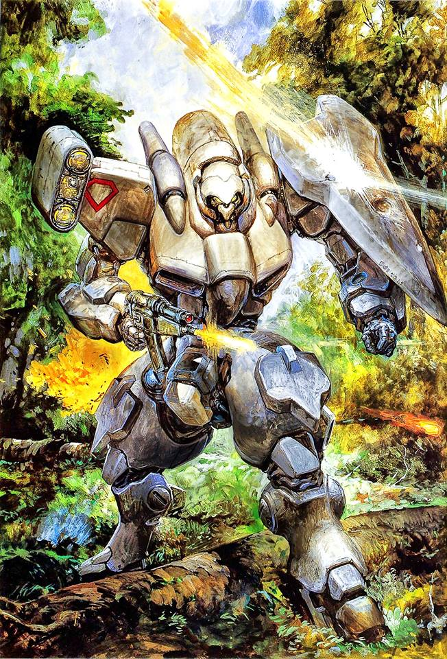

Power DoLLS
A genre defining game with medium defining art
 



"Fabricated quotes are more easily found than real ones"
— Paul McCartney
Power Dolls Art Tour - 2026
| Dates | Locale | Hours | Tickets |
|---|---|---|---|
| March 14-28 | New York, Madison Square Gardens | Sun-Friday: 9AM-10PM; Sat: 12PM-12PM | via eBay |
| May 4-18 | Minneapolis, The Art Museum formerly known as Prints | Mon-Friday: 9AM-8PM; Sat: 12PM-12PM; Sun: 2PM-6PM | via Amazon |
| June 1-15 | Portland, I don't know. Some place a friend of mine goes to | Mon-Thu: 7AM-5PM | via SmithTix |
| June 20-July 6 | Atlanta, The Lost City | Tue-Sat: 9AM-9PM; Sun & Mon: 12PM-5PM | via eBay |
| March 14-28 | London, Down on Top | Sun-Friday: 9AM-10PM; Sat: 12PM-12PM | via The Power of the Primes |
This year's panel on Power DoLLS will cover all of the series' hallmarks:
- Granular Action Points: Unlike the modern "Move and Action" binary found in many current TRPGs, Power DoLLS uses a highly granular Action Point (AP) system that rewards precise movement and energy management.
- Realistic Combined Arms: Success requires coordinating more than just mechs; players must integrate transport helicopters, tanks, and infantry to survive complex engagements.
- Intense Reconnaissance Focus: You must actively scout the battlefield, as being detected by an enemy unit immediately triggers coordinated artillery strikes from their entire army.
- No "Super Robot" Plot Armor: Mecha are treated as fragile tools of war rather than invincible superheroes, and they can be easily destroyed by common tanks if mismanaged.
- Logistics-Heavy Briefings: Missions involve extensive pre-mission planning, including selecting drop points and transport loadouts that directly impact the tactical map layout.
- Uncompromising Difficulty: The game respects the player's intelligence by offering "impossible" scenarios that require genuine tactical mastery rather than simple level grinding.
- Manual Dexterity: The original PC-98 interface utilized a precise mouse and keyboard system that felt more like operating a military terminal than playing a standard console game.
- Professional Character Focus: The all-female cast is treated with military gravity, avoiding the "social link" distractions and dating-sim elements that often slow down modern tactical games.
- Dithering Artistry: The 16-color dithering of the PC-98 creates a gritty, lo-fi aesthetic that modern high-definition 3D often fails to replicate in terms of atmosphere.
- Meaningful Equipment Weight: Every kilogram of weaponry and ammunition is measured, making loadout decisions critical to a unit's movement speed and AP efficiency.
- Electronic Warfare: Players must manage radar signatures and electronic interference, a layer of strategy frequently stripped from modern, simplified tactical titles.
- Non-Linear Mission Approaches: Many scenarios offer multiple entry strategies, such as stealth infiltration versus frontal assaults, which drastically change the mission flow.
- Reaction Fire Mechanics: Advanced ambush and reaction systems allow you to punish enemy movement during their own turn, rewarding defensive positioning.
- Environmental Verticality: Early entries introduced height differences that provided significant tactical advantages long before they became a standard feature in the genre.
- True Colonial Narrative: The story focuses on the hard realities of political independence and logistics rather than the "chosen one" tropes prevalent in modern JRPGs.
- Permanent Consequences: The high lethality of combat means losing a veteran pilot is a devastating blow, adding real weight and tension to every tactical decision.
- Specialized Mission Objectives: Objectives go beyond "kill all enemies" to include complex tasks like planting explosives on infrastructure or hacking computers under a time limit.
- Subtle Worldbuilding: Much of the lore is found in detailed technical data and manuals, rewarding players who prefer to immerse themselves in "hard" science fiction.
- Authentic "Real Robot" Feel: The Power Loaders are industrial tools repurposed for war, giving them a heavy, utilitarian movement style that feels grounded in reality.
- Lack of Hand-Holding: The game trusts the player to learn via observation and experimentation rather than using intrusive, immersion-breaking tutorials.
- Consistent Tone: The original releases avoid the flashy, tone-clashing cutscenes found in modern remakes to keep the focus entirely on the cold reality of the simulation.
- Complex Unit Promotion: Battlefield performance leads to actual promotions and leadership roles, which impact the command hierarchy and unit abilities.
- Smoke and Cover Dynamics: Using smoke grenades to break line-of-sight is a vital survival mechanic rather than just a niche status effect.
- High-Resolution UI: The 640x400 resolution of the PC-98 allowed for incredibly detailed user interfaces and character portraits that felt ahead of their time.
- Cult Status Integrity: As a Kogado Studio production, it retains a distinct developer voice that has not been diluted by modern corporate focus groups or market trends.
The Legacy of Power DoLLS: Mecha, Strategy, and the PC-98 Era
The Power DoLLS franchise stands as a pillar of Japanese tactical gaming, emerging during the golden age of the PC-9801 home computer. Developed by Kogado Studio’s "Usagi-san Team," the series first debuted in 1994 and quickly distinguished itself through a rigorous commitment to "hard" military simulation combined with a striking anime aesthetic. At its core, Power DoLLS is a narrative of colonial independence, following the struggle of the planet Omni as it seeks to break free from the terrestrial Earth government. To combat the overwhelming might of Earth’s conventional military, Omni’s resistance repurposed industrial "Power Loaders"—robotic exoskeletons used for space cargo—into agile, bipedal weapons of war.
Origins and Initial Success
When the first Power DoLLS title launched on the NEC PC-98, it was a revelation for strategy fans. Unlike many contemporary titles that simplified combat for broader appeal, Power DoLLS embraced complexity. The game required players to manage every facet of a mission, from choosing specific weapon loadouts for each limb of a mecha to coordinating air support and artillery strikes. This depth resonated with the Japanese PC gaming audience, who valued the system’s high-resolution 16-color dithering and the precise control offered by the PC-98’s keyboard and mouse interface. The game's success was immediate, leading to an expansion of the franchise onto the FM Towns, DOS, and eventually the PlayStation and PC-FX consoles.
The franchise's initial success was not merely a result of its mechanics, but also its world-building. The 177th Special Weapons Task Force, better known as the "DoLLS" (Detachment of Limited Line Service), became the face of the series. This elite unit was tasked with the most dangerous "impossible" missions, often involving deep-field sabotage, surgical strikes, and desperate defensive stands against impossible odds. The blend of high-stakes military drama and high-tech hardware established a formula that Kogado Studio would refine across six mainline sequels and numerous "Dash" and "Advanced" expansions throughout the late 1990s and early 2000s.
The All-Female Cast: Beyond the "Idol" Trope
One of the most defining characteristics of Power DoLLS is its entirely female cast of playable pilots. While many games of the era used female characters primarily as "fan service," Power DoLLS treated its roster with a distinct sense of professional gravity. Within the game's lore, the DoLLS were initially marketed by the Omni military as an "idol" unit to conceal their true purpose as a elite special operations force. This strategic deception allowed the unit to operate under the radar, carrying out high-impact missions while the enemy underestimated their capabilities.
For players, the all-female cast provided a unique dynamic in the mecha genre. Each pilot possessed distinct statistics and growth paths, forcing players to form a genuine connection with their squad through hours of careful tactical maneuvering. The focus remained on their competence as soldiers; there were no "social links" or romance mechanics to distract from the mission. This portrayal helped the series gain a dedicated following that appreciated the grit and skill of the pilots, rather than just their character designs. It challenged the male-dominated tropes of the "real robot" genre by proving that a serious military simulation could be led entirely by women without sacrificing narrative weight or mechanical complexity.
Influence on the Mecha Genre and Modern Tactics
Power DoLLS’ influence on the mecha genre is profound, particularly in how it popularized the concept of "combined arms" in tactical RPGs. While games like Front Mission focused heavily on mecha-versus-mecha combat, Power DoLLS integrated infantry, tanks, transport helicopters, and electronic warfare into a single cohesive system. It taught players that a giant robot was not an invincible god of the battlefield, but a specialized tool that required support to survive. This philosophy can be seen in modern tactical titles that emphasize squad synergy and environmental awareness.
Furthermore, the series acted as a bridge between the niche PC-98 strategy market and the burgeoning console RPG scene. It proved that there was a global appetite for "hard" sci-fi stories that didn't rely on the traditional tropes of teenage heroes saving the world. Instead, it focused on the logistics of war, the political cost of independence, and the technical evolution of military hardware. Even today, the "Power Loader" designs remain iconic within the mecha community for their utilitarian, semi-realistic appearance, influencing everything from model kits to the aesthetic of modern indie mecha games.
A Lasting Legacy on the PC-98
The PC-98 was a platform defined by its unique hardware limitations and its distinct visual style, and Power DoLLS remains one of the best examples of the platform's capabilities. The crisp character portraits and detailed mechanical diagrams utilized the PC-98’s palette to create a look that was both sterile and beautiful—fitting for a futuristic military archive. While the series eventually migrated to Windows and saw various remakes, the original PC-98 titles are still regarded as the purest expression of the franchise’s vision.
In conclusion, Power DoLLS is more than just a relic of 90s Japanese computing; it is a masterclass in tactical design and world-building. By centering a hardened, professional female cast within a complex military simulation, it carved out a unique space in gaming history. Its legacy persists in every tactical game that asks the player to consider their fuel reserves, their ammo counts, and the lives of the soldiers under their command before they ever make their first move.